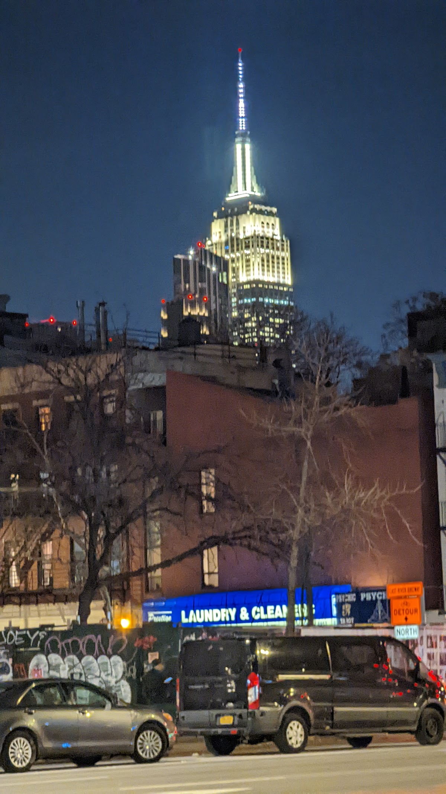
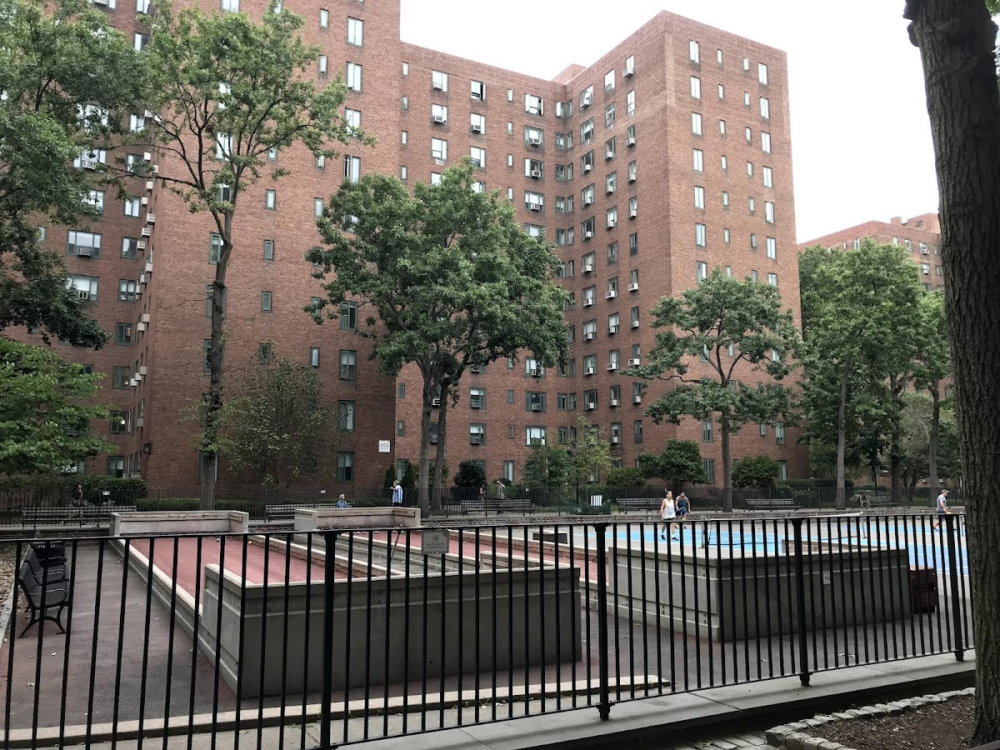
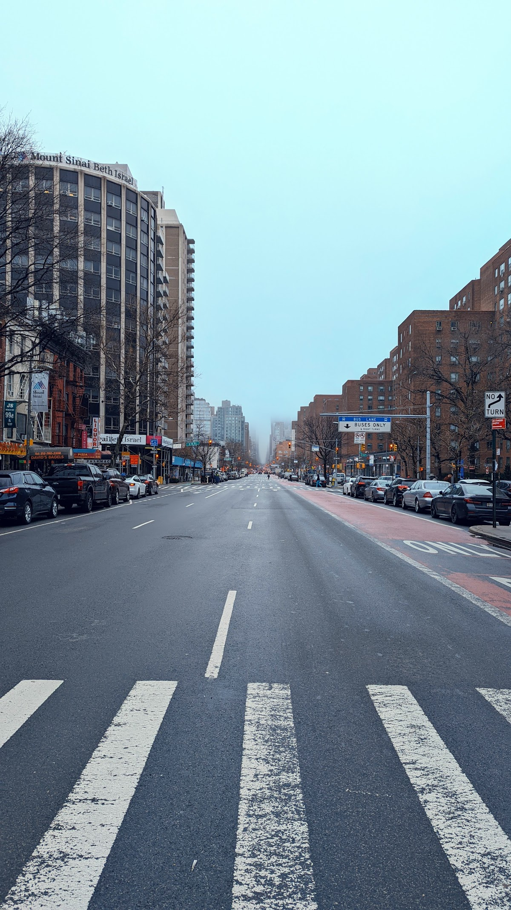
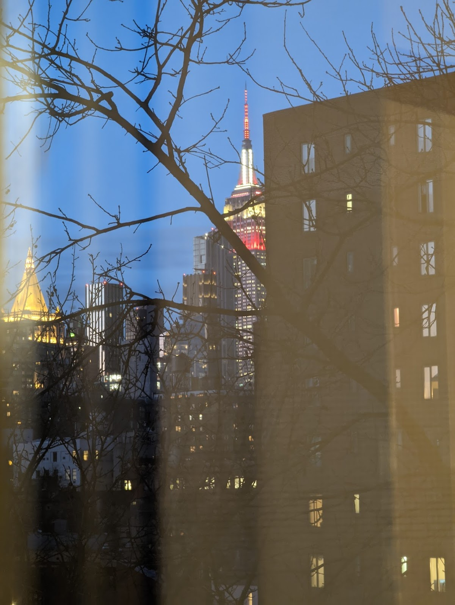
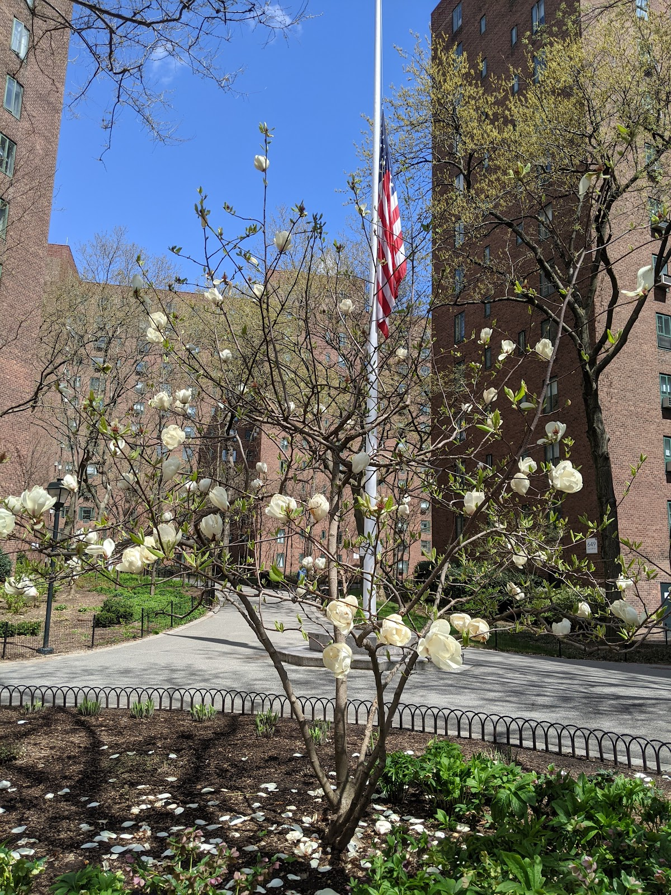

Shared spaces
Stuy Town
A large residential complex in Manhattan, known for its extensive green spaces and community amenities.
Background
Stuyvesant Town, commonly known as Stuy Town, was developed in the 1940s as a post-war housing project. It was designed to provide affordable housing for veterans and their families. Over the years, it has evolved into a diverse community with a mix of rent-stabilized and market-rate apartments.
Original AI-assisted background; not independently verified.
From the original map
"The best idea private equity has ever had"
Homes and shared residential spaces may be private. View from public streets unless entry is clearly permitted; map pins are reference points, not confirmed entrances.
Nearby places
Straight-line distances, not walking routes.
Discussion & corrections





40.73181, -73.97789 · Explore the surrounding area ↗